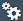

Support Assistant
The Support Assistant enables developers to check whether their apps are built according to the OpenUI5 best practices and guidelines.
The tool aims to reduce maintenance and consulting times and to streamline OpenUI5 app development. It uses a set of predefined rules to check all aspects of an application, for example, accessibility, performance, data binding, usability. With a simple click, you can check the current state of your app. After execution, you can analyze the results and apply corrective measures based on the outcome.
Check out the Support Assistant highlights video for an overview of its main functionalities:
 is not part of the SAP product documentation. Please read the legal disclaimer for video links before viewing this video.
is not part of the SAP product documentation. Please read the legal disclaimer for video links before viewing this video.The Support Assistant can be started using a URL or a Technical Information Dialog.
From a URL Parameter
The Support Assistant is enabled with the following URL parameter: sap-ui-support=true. The tool then appears as a toolbar in the footer of the app.
If you want to run the Support Assistant in a separate window, use the parameter sap-ui-support=true,window

From the Technical Information Dialog
You can also start the Support Assistant from the Technical Information Dialog.
-
Open the Technical Information Dialog by using the following shortcut: CTRL + SHIFT + ALT + P .
-
Choose Activate Support Assistant.
Starting the Support Assistant from here allows you to run it with a different OpenUI5 version. You can find more details on this topic in Running the Support Assistant on an Older OpenUI5 Version.
Selecting Rules will show you the available rulesets. You can then select your rules and start the analysis of the app.
All scopes and temporary rules can be stored in the local storage of your browser. This will allow you to continue with your work even after you have closed the browser window. To enable this feature, choose Settings () on the banner and select the checkbox I agree to use local storage persistency for.
You can delete your already persisted data by choosing Delete Persisted Data.
-
To learn more about rules and rule management see: Rules Management
-
To learn more about result processing and reporting see: Results and Analysis
-
To learn more about creating your own rules see: Rule Development Guide